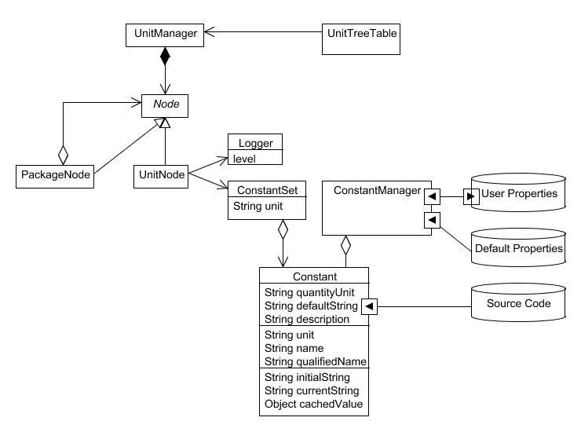

The purpose of this package is to handle application logical constants in a common way, from their definition in their hosting classes, their potential on-line modification, and their persistency on disk. If one day Audiveris migrates to NetBeans platform, the bulk of this package should disappear.

Constant instances represent a logical application constant, whose persistency is to be managed from one application run to the other.
A constant (and its subclasses) can be:
Modification of a Constant value must preferably be performed through dedicated interfaces. You can directly edit the property files, but you do so at your own risks. There are two constant-related GUI within the application:
Persistency of each constant is handled by the ConstantManager singleton, which uses
the qualified name of the constant as the key to retrieve a related
property (if any) specified in either the DEFAULT and/or the USER
property files. Please refer to the ConstantManager documentation to read
the details on how a constant value is determined.
Since the persistency of a Constant uses its fully qualified name
(i.e. the path to the enclosing class, plus the name of the
constant element in the ConstantSet), the determination of the
fully qualified name is deferred until the value of the Constant is
actually retrieved. This is implemented through the use of a
DirtySet within the UnitManager.